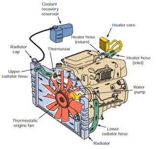
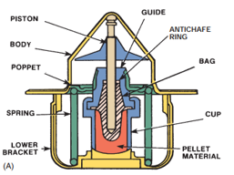
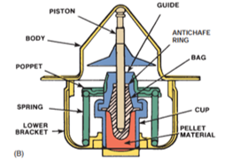
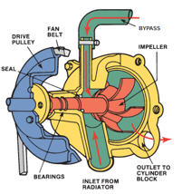
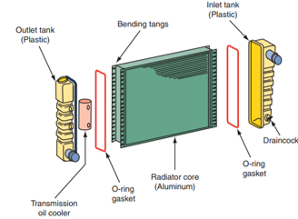
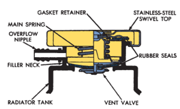
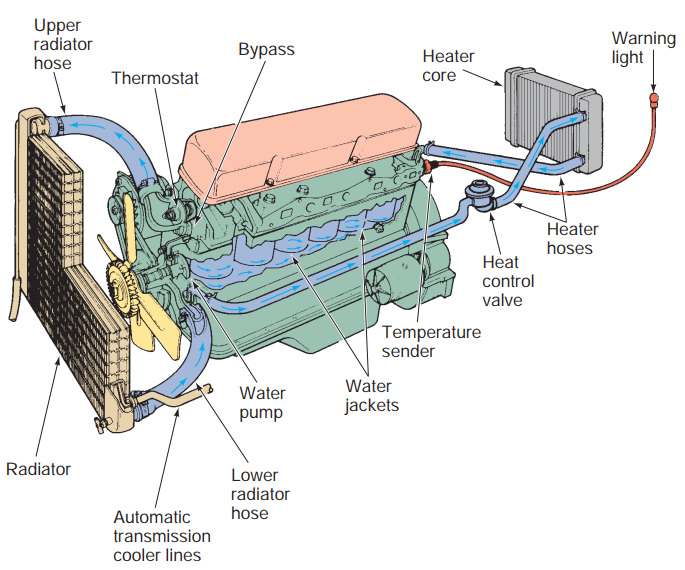

COOLING SYSTEMS
Today’s engines create a tremendous amount of heat. Most of this heat is generated during combustion. Metal temperatures around the combustion chamber can run as high as 1,000°F (537.7°C). This heat can destroy the engine and must be removed.
This is the purpose of the engine’s cooling system. The system must also allow the engine to quickly warm up to a desired operating temperature and keep it there regardless of operating conditions. Heat is removed from around the combustion chambers by a heat-absorbing liquid (coolant) circulating inside the engine. Coolant then flows to the radiator where the coolant’s heat is transferred to the outside air. A pump moves the coolant through the engine block and then through the cylinder head.

Figure 4.1. Cooling system
A thermostat is used to control operating temperature. When the coolant temperature is below the desired operating temperature, the thermostat is closed, which allows the coolant to recycle through the engine. When normal operating temperatures are reached, the thermostat opens to allow the coolant to flow to the radiator. The coolant flows to the top of the radiator and loses heat as it flows down through the radiator. Ram air and the airflow from the cooling fan move through the radiator and cool the coolant. The cooled coolant leaves the radiator and enters the water pump and then is sent back through the engine.
Coolant
Engine coolant is a mixture of water and antifreeze/coolant. Engine coolant has a higher boiling temperature and a lower freezing point than water.
The exact boiling or freezing temperatures depend on the mixture. The typical recommended mixture is a 50/50 solution of water and antifreeze/coolant.
Thermostat
The thermostat controls the minimum operating temperature of the engine. The maximum operating temperature is controlled by the amount of heat produced by the engine and the cooling system’s ability to dissipate the heat.
A thermostat is a temperature-responsive coolant flow control valve. It controls the temperature and amount of coolant entering the radiator. While the engine is cold, the thermostat remains closed (Figure 4.2), allowing coolant to only circulate in the engine. This allows the engine to uniformly warm up.

Figure 4.2. Thermostat closed

Figure 4.3. Thermostat open
When the coolant reaches a specified temperature, the thermostat begins to open and allows coolant to flow to the radiator. The hotter the coolant gets, the more the thermostat opens (Figure 4.3), sending more coolant to the radiator. Once the coolant moves through the radiator, it reenters the water pump. From there it is pushed through the passages in the engine and the cycle starts again. The thermostat permits fast engine warm up. Slow warm up causes condensation in the crankcase, which can cause the formation of sludge. The thermostat also keeps the coolant above a specific minimum temperature to ensure efficient engine performance.
Water Pump
The heart of the cooling system is the water pump. Its job is to move the coolant through the system. Typically the water pump is driven by the crankshaft through pulleys and a drive belt. On some engines the pump is driven by the camshaft, timing belt or chain, or an electric motor.

Figure 4.4. An impeller-type water pump.
Radiator
The radiator is basically a heat exchanger, transferring heat from the engine to the air passing through it. The radiator itself is a series of tubes and fins (collectively called the core) that expose the coolant’s heat to as much surface area as possible. Attached to the sides or top and bottom of the core are plastic or aluminum tanks (Figure 4.5). One tank holds hot coolant and the other holds the cooled coolant. Cores are normally comprised of flattened aluminum tubes surrounded by thin aluminum fins. The fins conduct the heat from the tubes to the air flowing through the radiator. Most radiators have drain petcocks or plugs near the bottom. Coolant is added at the radiator cap or the recovery tank.

Figure 4.5. The radiator
Radiator Pressure Cap
Radiator caps (Figure 4.6) keep the coolant from splashing out of the radiator. They also serve a very important role in keeping the coolant’s temperature within a desired range. It does this by keeping the coolant pressurized to a specified level.

Figure 4.6. Parts of a radiator pressure cap
Hoses
Coolant flows from the engine to the radiator and from the radiator to the engine through radiator hoses. The hoses are usually made of butyl or neoprene rubber hoses to cushion engine vibrations and prevent damage to the radiator.
Water jackets
Hollow passages in the block and cylinder heads surround the areas closest to the cylinders and combustion chambers (Figure 4.7). Included in the water jackets are soft (core) plugs and a block drain plug. Some engines are equipped with plastic liners that direct coolant flow around critical areas. The soft plugs and drain plugs are usually removed during engine teardown. New ones are installed during reassembly. Core plugs are prone to rust and corrosion and, therefore, will weep coolant or rust through completely. When this happens, the core plugs should be replaced.

Figure 4.7. Parts of Cooling system